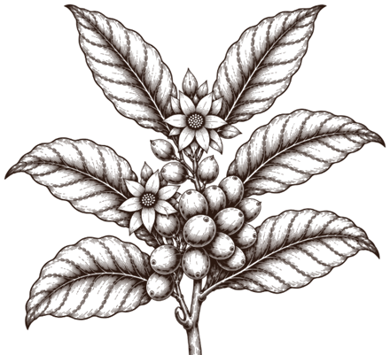

Pour Over
15 g café • 250 g agua • 92–94 °C • 2:30–3:00.
Molienda media-fina.
Anaeróbico · 120 horas
Tueste medio Café de especialidad hondureño

Exquisitas bayas con un acabado suave de chocolate oscuro.
Perfil y proceso
Las cerezas enteras reposan en tanques sellados durante 120 horas de fermentación anaeróbica y luego se secan al sol en camas elevadas. El secado lento y uniforme preserva la intensidad de la fruta y un acabado similar al cacao.
Finca Los Almendros — San Luis, Comayagua, Honduras
Tostado por Almendros Coffee Co.
Nuestro café proviene de Finca Los Almendros, en las montañas de San Luis, Comayagua, bajo el cuidado del productor Fernando Padilla. La fermentación anaeróbica de 120 horas aporta una complejidad y profundidad excepcionales, resaltando notas intensas a bayas azules y un final suave a chocolate oscuro.
Trabajamos directamente con el origen para asegurar prácticas agrícolas responsables y un trato justo en cada cosecha. Este café se cultiva en altura siguiendo métodos tradicionales que respetan el entorno y cuidan la biodiversidad.
Al elegir este Catimor Natural, apoyás la caficultura de especialidad hondureña y el trabajo dedicado de cada cosecha en Finca Los Almendros.
Datos del lote

En tu taza
Sacale todo el potencial a tu Catimor Natural con estas recetas base.
15 g café • 250 g agua • 92–94 °C • 2:30–3:00.
Molienda media-fina.
16 g café • 210 g agua • ~1:45 total.
Molienda media · presión suave.
18 g entrada • 36–40 g salida • 27–32 s.
Bajá un poco la temperatura si el shot se siente ácido.
De la ventana a la calle
Desde la ventana, el gato mira la ciudad de siempre mientras el cielo se tiñe de naranja y el sol empieza a caer. Se pone los lentes y sale al mismo camino de edificios y cables de todos los días. No pasa nada: afuera tampoco perdona su taza de Catimor.

Tras el vidrio, el cielo naranja anuncia que el sol empieza a caer. El gato observa los edificios y los cables de siempre antes de salir.
Con los lentes puestos, sale a recorrer las calles de todos los días. La rutina sigue igual, pero el ánimo cambia cuando lleva su café en mano.
Ya afuera, no se pierde su taza. Bayas azules, chocolate oscuro y un sorbo que convierte la tarde en su mejor momento del día.
Llevate tu Catimor
Elegí tu presentación de esta cosecha 2026 o abrí el asistente para calcular tu receta ideal.
L215
Consultar por 250 gL395
Consultar por 500 gLas condiciones y el costo del envío se consultan directamente por WhatsApp.
Calculá la proporción ideal de café y agua para tu taza.